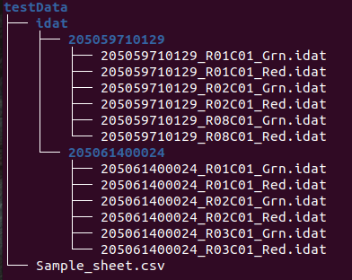

Appendix A — Appendix-1
Create the input zip file for methylR
This section describes how to create a zip archive containing the input files to start the methylysis analysis.
A.1 Methods
We will describe three methods to create a zip file:
- Windows zip utility
- 7-zip (https://www.7-zip.org/)
- Bash script (https://www.github.com/)
- Command line (Ubuntu Linux)
A.1.1 Description
Users need to collect the Sample_sheet.csv file and all the idat files belonging to the analysis as they come from the sequencer. All the methods require to create a New folder (you can give any name, for example testData) and move the Sample_sheet.csv file inside. Enter the testData directory and then create a folder named idat, then move all the directories generated with the analysis and containing the idat files (green and red) into this idat folder. In the end you will get this kind of organisation:

A.2 1. Windows zip utility (Windows 7, 8, 10, 11)
- Right-click on the New folder you created with the file structure discussed above.
- Then click Send to > Compressed (zipped) folder

A.3 2. 7-zip utility (Windows 7, 8, 10, 11)
7-Zip is a free open-source file archiver with a high compression ratio. You can use 7-Zip on any computer, including a computer in a commercial organization. You don’t need to register or pay for 7-Zip. You can download 7-zip for Windows at (https://www.7-zip.org/). If you have installed 7-zip and want to create the input file for methylR you just:
- Right-click on the New folder you created with the file structure discussed above.
- Then click 7-Zip > Add to archive…

A.4 3. Bash script (MacOS/Linux)
We provide an automathized bash script that is able to create the file structure discussed above for you.
A.4.1 Linux:
Depending on which interface you use (e.g., GNOME, KDE, Xfce), the terminal will be accessed differently. We recommend you check Ubuntu’s Using the Terminal page for the several ways to access the terminal.
- Click Start and search for “Terminal”. Alternatively, press Alt + Ctrl + t and type “cmd” then click OK.
- Then type the following command:
cd /path/to/data/
sh script.shA.4.2 MacOS:
- You can access the terminal by pressing ⌘ + space on your keyboard and searching for “terminal”.
- Then type the following command and press Enter:
cd /path/to/data/
sh script.shA.5 4. Command line (Linux)
Depending on which interface you use (e.g. GNOME, KDE, Xfce), the terminal will be accessed differently. We recommend you check Ubuntu’s Using the Terminal page for the several ways to access the terminal.
- Click Start and search for “Terminal”. Alternatively, press Alt + Ctrl + t and type “cmd” then click OK.
- Then move to the New folder and create the zip archive by typing the following command and press Enter:
cd /path/to/data/
zip folder/